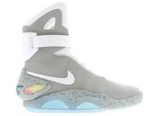
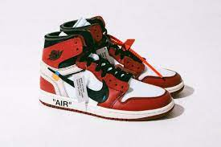

| En esta sección te mostraré tennis muy caros y famosos del mundo. | ||
|---|---|---|
| Nombre de par de tennis | Imagen | Precio |
| Nike Air Yeezy 1 de Kanye West | 
| 1.8millones de dolares |
| Nike Mag OG |  | 2 millones de MXM |
| Jordan retro 1 x Dior | 180,000 dolares | |
| Adidas Yeezy Red October | 1 millon de pesos MXM | |
| jordan 1 nike x off-white |  | 700,000 pesos MXM |